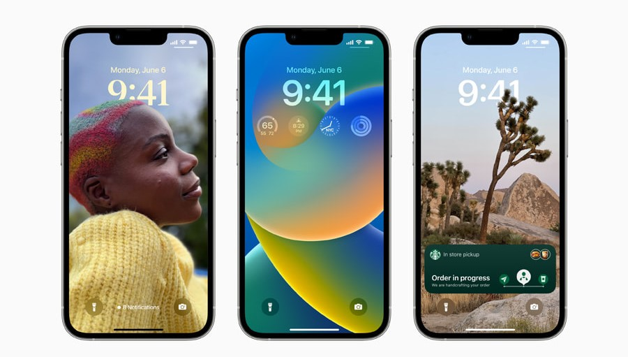
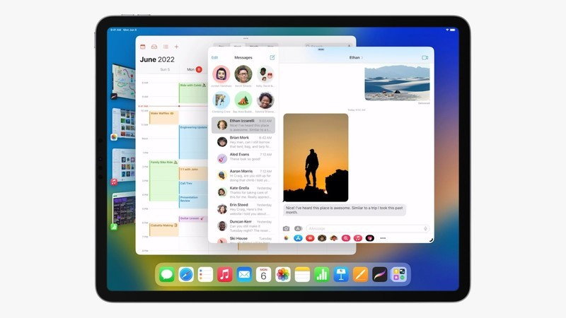
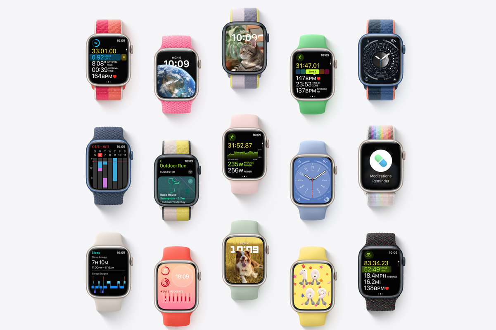
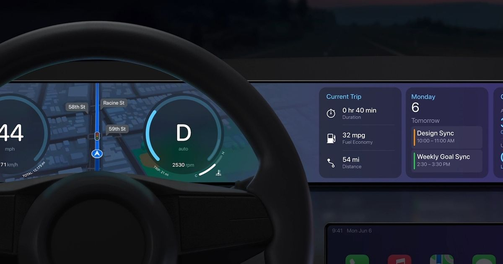
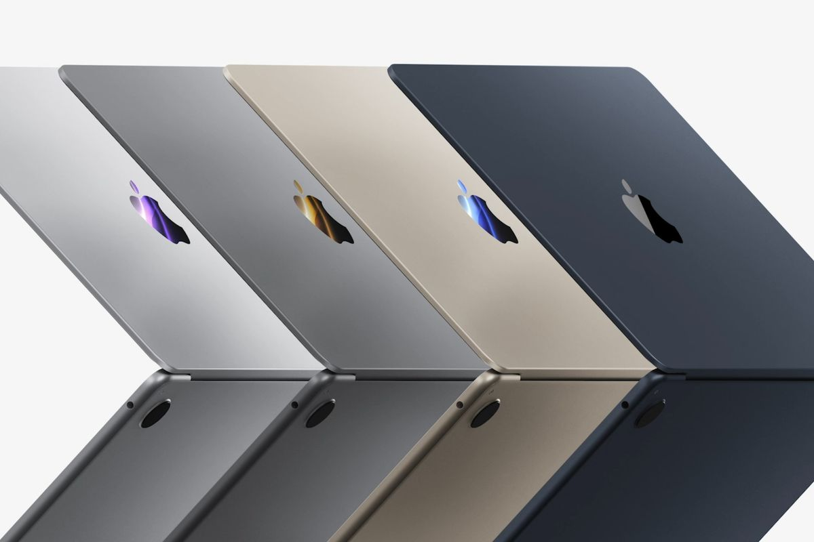

Apple'ın geliştirici etkinliğinde ne oldu
Gece Modu

Emir Muhammed Muhammedi Karabağ
Sonunda, bu yılki WWDC etkinliği geldi ve her yıl olduğu gibi bu yıl da Apple, Apple hayranlarından rakiplerine kadar pek çok kişinin beklediği ürünleri tanıttı.
iOS 16
Craig Federiki sahneye çıktı ve en son iPhone işletim sistemlerini açıklamaya başladı.Bu sürüm daha çok kişiselleştirmeye yönelik, Android kullanıcılarının uzun süredir kişiselleştirme yeteneklerini sergiledikleri bir şey.Örneğin bu sürümde siz, mobil kilit ekranınızı tamamen kişiselleştirebilir, kilit ekranına widget ekleyip saatin yazı tipini ve rengini, ayrıca arka plan için seçtiğiniz görseli değiştirebilir ve konuyu saatin üzerine koyabilirsiniz. iMessage programında mesajı düzenleyebilir hatta gönderdikten sonra geri alabilirsiniz.Bu yazılıma Shareplay özelliği de eklenmiştir. Ayrıca, daha önce sürüm 15'te tanıtılan iOS Live Text'in bu sürümünde iyileştirildi ve örneğin para birimlerini değiştirebilir ve görüntüyü otomatik olarak döndürebilir.Yeni Apple Fotoğrafları artık iCloud Share Photo Library ile görüntüleri kullanabilir 5 aile üyesiyle paylaşın Bundan böyle Apple Fitness uygulaması iPhone kullanıcıları için de kullanılabilecek ve onu kullanmak için artık bir Apple Watch'a ihtiyacınız olmayacak.
iPadOS 16
16. versiyonda çalışma grubu bazında tasarlanan Collaboration fonksiyonunu kullanabilirsiniz.Yeni versiyonda yeni widget'lar ve değişken alan derinliğine sahip arka plan görselleri ile birlikte sunulan StageManager özelliği bulunmaktadır. yeni macOS (Ventura), sadece iPad için M1 işlemcisi olanlar eklendi
macOS Ventura

Bu sürümde, artık ekranın yanında çalışmakta olan yazılımı görmenizi ve gerekirse bunlar arasında hızlı geçiş yapmanızı sağlayan StageManager özelliği de dahil olmak üzere Mac OS'ye çok kullanışlı özellikler eklenmiştir. Spotlight motoru optimize edilmiştir. Bulunur ve içinde detaylı bir internet araması yapabilir ve hatta onunla fotoğraflardaki resimlerdeki metinlerde arama yapabilir, yazım düzeltici ve iPhone'dan görüntülü arama geçişi yapabilirsiniz. Mac'e ve yeni şifreleme sistemine, yani Parolalar ve kullanılabilirlik. iPhone'un kamerasından, yalnızca iPhone'u ekranın arkasına yerleştirerek web kamerası gibi görüntülü aramalar Ventura'daki en heyecan verici seçeneklerden biriydi.
WatchOS9
Yeni versiyonda saatler adımların uzunluğuna göre tip 2 belirleyebiliyor ve kullanıcıya uygun verileri gösterebiliyor.Benzer şekilde dört yeni saat kadranı eklenmiş, ayrıca hap ve ilaç almak için bir hatırlatma çubuğu da eklenmiş. Ardından saatler kullanıcının atriyal fibrilasyonda olduğunu algılayabilir.
Apple carplay
Apple CarPlay artık tüm bilgisayar sistemleriyle uyumlu ve çok güçlü.CarPlay ile artık arabanızdaki her şeyi izleyip kontrol edebilirsiniz.Tabii ki bu hedefe tam anlamıyla ulaşmak için otomobil üreticilerinin Apple ile iş birliği yapması gerekiyor. Şimdi donanıma geçelim!
M2 chip
Yeni işlemci m1pro/m1max kadar güçlü değil ancak bir önceki nesil M1'den %18 daha hızlı ve artık 8 ve 16 GB RAM'e ek olarak 24 GB RAM de kullanabiliyorsunuz. 5 nm litografi Önceki nesle göre daha fazla bant genişliğine ve %35 daha iyi grafik performansına sahiptir ve saniyede 15,8 trilyon işlem gerçekleştirebilir.
Yeni Macbook air ve Pro
MacBook Pro 2022, 2020 sürümüyle tamamen aynı ancak yeni bir işlemciye sahip ve görünümde herhangi bir değişiklik yok ancak yeni MacBook Air piyasaya yeni bir tasarımla girdi ve tasarımı da ağabeylerine benzer, yani. 14 inç ve 16 inç Provi Artık MacBook'ta Yeni Air'in bir çentiği ve yeni bir klavyesi var.Elbette web kamerası da 1080p ve MacBook Air'e popüler Mag Safe şarj cihazı da eklendi.Bu cihaz uzay grisi, altın ve mavi renkleri mevcut ancak bu seneki fiyatı bir önceki versiyona göre biraz daha yüksek ve bu cihazın baz versiyonu 1200 dolar fiyatla piyasaya çıktı